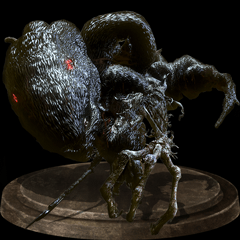
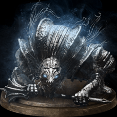

Ludex Gundyr
Vordt of the Borreal Valley
The Curse Rotted Greatwwod

Dark Souls 3 takes place in a transitory place, revolving around the first flame and the cycle of fire and dark.
You play as a protagonist whose goal is to find and return the five Lords of Cinder to their thrones at Firelink Shrine in order to link the flame again.
The protagonist is known as an Unkindled, a kind of Undead, although it is never fully enunciated upon what differentiates an Unkindled from other Undead.
There are implications that an Unkindled is the remains of an Undead warrior who failed to link the flame and, as a result, burned their bodies into ash.
The five Lords of Cinder are Ludleth the Exiled; Aldrich, Saint of the Deep; Farron's Undead Legion, the Abyss Watchers;
the reclusive lord of the Profaned Capital, Yhorm the Giant; and Holy King Lothric, Last Hope of His Line. Lords of Cinder are past beings who were successful in linking the flame, being burned remnants of their past selves.
Like in its predecessors, the story and lore of Dark Souls 3 can be pieced together through its introductory cinematic, item descriptions, dialogues, and environments.
Yes, indeed. It is called Lothric,
Where the transitory lands of the Lords of Cinder converge.
In venturing north, the pilgrims discover the truth of the old words.
“The fire fades, and the lords go without thrones.”
When the link of fire is threatened, the bell tolls,
unearthing the old Lords of Cinder from their graves.
Aldrich, Saint of the Deep. Farrons Undead Legion, The Abyss Watchers.
And the reclusive lord of the Profaned Capital, Yhorm the Giant.
Only, in truth... The Lords will abandon their thrones.
and the Unkindled will rise.
Nameless, accursed undead,
unfit even to be cinder.
And so it is.
That ash seeketh embers.